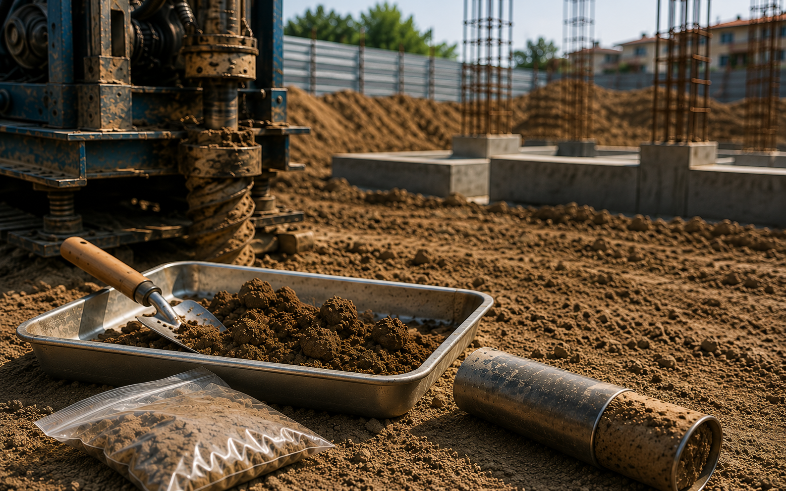
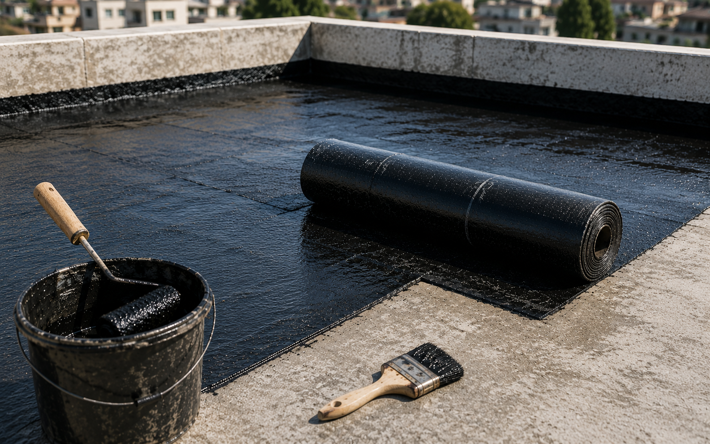

Why a soil test is the cheapest insurance you'll buy
A small upfront cost that tells you the safe bearing capacity of your land — and prevents the settling and cracking that ruins foundations.
Aug 20255 min read
Practical advice for every stage of building.

A small upfront cost that tells you the safe bearing capacity of your land — and prevents the settling and cracking that ruins foundations.
Reducing steel is the most dangerous shortcut in Nepali construction. We explain what NBC 105:2020 requires and why it matters.

Most terrace and bathroom leaks trace back to skipped waterproofing. Get the sequence right the first time.
The common mistakes that get building-permit drawings rejected — and how to avoid every one of them.
A realistic BOQ prevents most cost overruns. Here's how to read one — and the line items people forget.
Supervision isn't a signature on paper. It's measuring, checking and catching problems before the concrete sets.
Nepal's rainy season is both a help and a hazard for fresh concrete. How to cure it properly so it reaches full strength without cracking.
Each walling material has a real trade-off in cost, weight, insulation and earthquake load. A plain-language comparison for Kathmandu homes.
The honest ranges for normal, mid and premium finishes — and why the cheapest quote almost never stays the cheapest.
Every document your ward office asks for, in the order you'll need them — so your permit doesn't stall halfway.
Slope, joints, pipe routing and access — small decisions during rough-in that save you from breaking tiles two years later.
Homes built before current seismic code can often be strengthened rather than rebuilt. The signs that mean it's time to get yours checked.